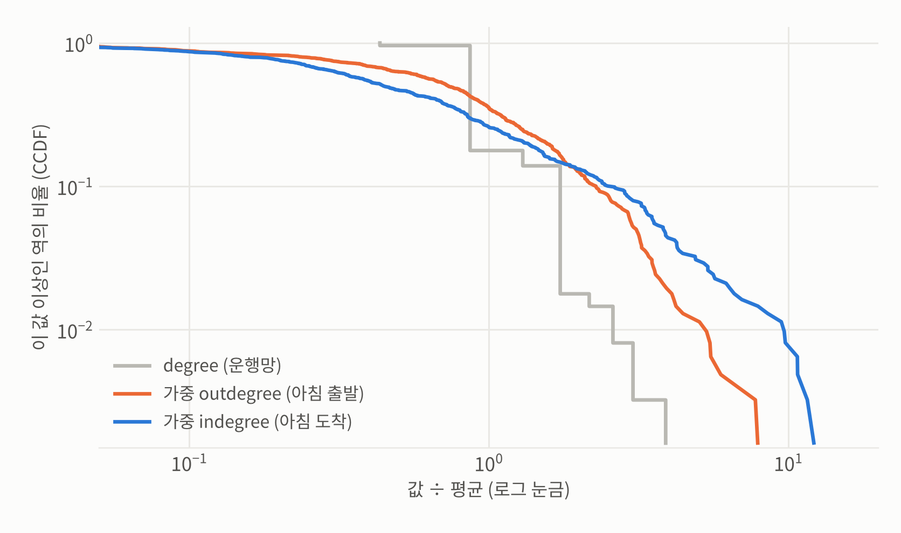
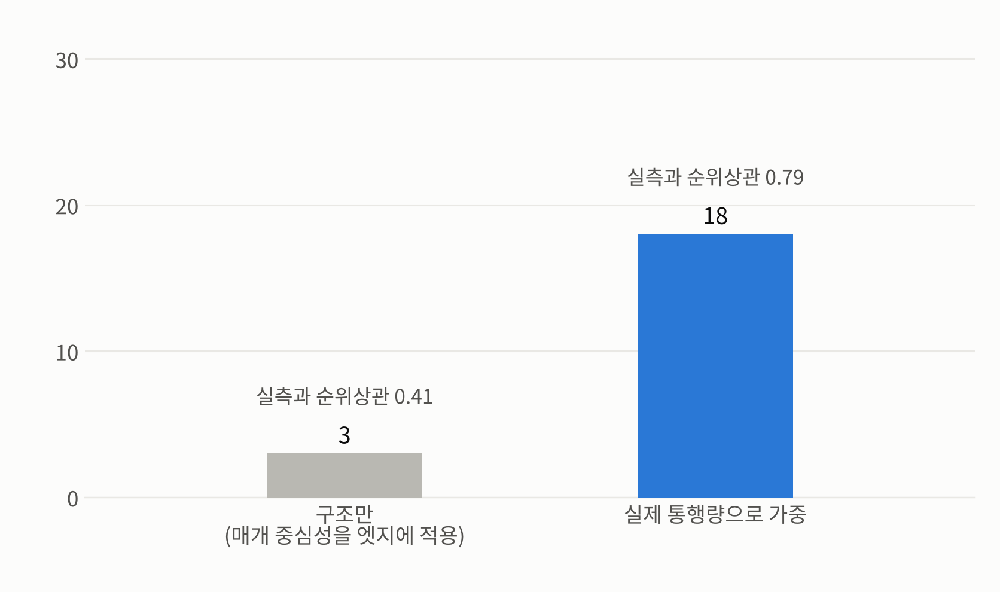
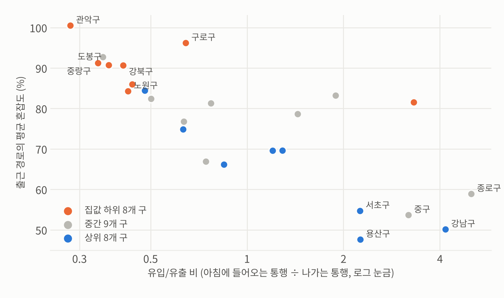

소셜 네트워크 과학 팀 프로젝트
150%를 달성한 뒤에 남은 혼잡
서울 지하철 아침 병목의 네트워크 분석
어디에, 누구에게, 왜 남았는가
팀 이름
발표자 · 팀원 이름
CONTENTS
01
연구 개요
주제 선정 배경
관리 기준과 현황
연구 목적 및 필요성
용어와 기준
02
분석 프로세스
순서도
데이터 선정 및 전처리
네트워크 정의
03
분석 결과
어디에: 구조 대 통행, 통로
누구에게: 손잡이, 집값 묶음
왜: 승객 대 열차
04
결론
최종 결과
해결 방향과 솔루션
기대효과 및 한계점
참고자료
01. 연구 개요
주제 선정 배경
150% 목표는 달성됐다

평일 08:00 칸, 13개 시점(2021-12 ~ 2026-09). 파랑 130% 이상, 주황 150% 이상
그런데 130% 이상은 남아 있다
12개 → 0개
150% 이상 구간. 2022-12에 12개, 2024-06 이후 한 분기(2025-11, 3개)를 빼면 0개
22개
130% 이상 구간. 2026-09에도 남아 있다
28.0%
아침 통행 중 130% 이상 구간을 지나는 비율 (100% 이상은 48.8%)
01. 연구 개요
관리 기준과 현황
증회 정책
2023-04부터 다섯 차례
| 시점 | 내용 |
|---|---|
| 2023-04 | 2·3·5호선 각 4회 |
| 2023-10 | 4호선 4회, 7호선 2회 |
| 2024-01 | 4호선 2회 |
| 2024-05 | 4·7호선 각 2회 |
| 2025-03 | 2호선 1회 |
다음 계획: 4·7·9호선 증차(2027년까지, 8편성)
혼잡도 기준
서울시 관리 목표: 150% 이하
서울교통공사 안내 4단계: 80%, 130%, 150%에서 나뉜다. 130%부터 "주의"
정원 160명 기준. 150%는 한 칸에 240명
2026-09 보도: 150% 이하는 "보통"
기존 관리 방식
노선별 최고 혼잡도가 150%를 넘는가
▾
넘는 노선의 정점 시간에 증회
▾
성과도 최고 혼잡도로 발표
최댓값 하나만 본다
누가 지나는지, 옆 시간 칸이 어떤지는 보지 않는다
01. 연구 개요
연구 목적 및 필요성
150%를 달성한 뒤에 남은 혼잡이 어디에, 누구에게, 왜 남았는지를 통근 네트워크로 측정한다
1. 최댓값 기준의 사각
130~150% 구간은 지금 기준으로 모두 "보통"이다
→ 남은 혼잡의 위치를 다시 잰다
2. 누가 겪는지 모른다
역별 통계로는 혼잡을 겪는 사람이 보이지 않는다
→ 통행 경로로 노출을 잰다
3. 정점 앞뒤는 관리 밖
증회는 정점 한 칸을 겨냥한다
→ 승객과 열차를 나눠 본다
➜
위치 · 대상 · 원인과
해결 순서
01. 연구 개요
용어와 기준
혼잡도란?
열차 정원 대비 탄 사람의 비율. 100%가 정원
혼잡도 = 승객 ÷ (열차 수 × 정원)
병목이란?
평일 08:00 칸(08:00~08:30) 혼잡도 130% 이상 구간
2026-09 기준 22개. 2호선 5, 3호선 3, 4호선 3, 7호선 7, 8호선 4
승객 ∝ 혼잡도 × 열차 수
이 발표에서 새로 정의한 용어
| 병목 통로 | 병목이 이어진 묶음. 6개 |
| 병목의 손잡이 | 통로를 지나는 통행의 출발역과 도착역 중 더 몰린 쪽. 상위 5곳 비중이 반대쪽의 1.15배를 넘을 때 |
| 평균 혼잡도(노출) | 출근자가 지나는 구간의 혼잡도를 통과 시간으로 가중 평균한 값 |
| 유입/유출 비 | 아침에 그 구로 들어오는 통행 ÷ 나가는 통행 |
| 순효과 | 옮겨 나온 칸과 옮겨 간 칸을 합쳐서 본 과밀 변화 |
자료 주의: 9호선·신분당선·코레일 구간은 혼잡도 자료가 없다. 아침 통행은 추정값이다
02. 분석 프로세스
순서도
데이터 수집
망 자료
팀 운행망(1~9호선)
공식 노선도·좌표(12개 노선)
시각표(2026-09-01)
통행 자료
역별 OD(2026-09-30)
시간대별 승하차(OA-12252)
혼잡 자료
혼잡도 13개 시점(OA-12928)
사람 자료
아파트 실거래가(2026-04~06)
전처리
➜
분석 과정
어디에
구조 대 통행 비교
null model
컴포넌트 → 통로 6개
누구에게
병목의 손잡이
집값 묶음별 노출
유입/유출 비
왜
승객 대 열차 분해
증회 노선 대 나머지
(대조군)
운행망 + 통행망 = 구간별 승객 → ÷ (열차 수 × 정원) → 혼잡도
▾
분석 결과
해결 방안: 09:00 열차 감축을 늦추고, 통로마다 좁은 쪽을 겨냥해 옮긴다
이동과 열차 유지를 조합한 순효과 계산
02. 분석 프로세스
데이터 선정 및 전처리
연구 자료
| 자료 | 무엇인가 | 제공처 | 시점 | 구분 | 쓰임 |
|---|---|---|---|---|---|
| 혼잡도 | 역 × 방향 × 30분 | 열린데이터광장 OA-12928 | 13개 시점 | 핵심 | 병목 정의, 추이 |
| 역별 OD | 역쌍별 하루 통행 738만 건 | 서울시 (요청 자료) | 2026-09-30 | 핵심 | 통행망의 역쌍 크기 |
| 시간대별 승하차 | 역별 월 합계 | 열린데이터광장 OA-12252 | 2026-09 | 핵심 | 아침 07~10시 역별 총량 |
| 시각표 | 열차별 역 통과 시각 | 팀 자료 | 2026-09-01 | 핵심 | 30분별 열차 수 |
| 운행망 | 역, 구간, 운행 시간 | 팀 자료 + 공식 노선도 | 2026 | 핵심 | 경로 계산 |
| 아파트 실거래가 | 구별 중위값 (23,703건) | 국토교통부 API | 2026-04~06 | 보조 | 집값 3분위 |
| 열차운행현황 | 운행 횟수, 배차 간격 | 열린데이터광장 OA-13318 | 5개 시점 | 보조 | 공식 간격 확인 |
| 실시간 열차 위치 | 3·4·7·8호선 1분 간격 | 열린데이터광장 API | 2026-11-24 | 보조 | 시간표 대조 |
범위: 평일 07~10시 · 기준 2026-09 · 역 619개 · 노선별 노드 756개 · 구간 1,466개 · 아침 통행 214만 건 · 관측 구간 526개
02. 분석 프로세스
데이터 선정 및 전처리
전처리 과정 ① 망과 통행
운행망 자료
- 1~9호선 역, 구간, 운행 시간
- 그 밖 12개 노선의 역 순서와 좌표
➜
운행망
역을 노선별 노드로 나눈다. 같은 역의 노드끼리는 환승 300초로 잇는다
구간 가중치 = 운행 시간 + 정차 30초. 12개 노선은 거리 × 1.2 ÷ 노선별 속도로 추정
→ 역 619개 · 노선별 노드 756개 · 구간 1,466개 · 환승 330개 (방향 있음)
통행 자료
- 역별 OD: 하루 합계, 시간대 없음
- 시간대별 승하차: 역별 07~09시대 총량
➜
아침 통행표
비례 반복 조정: 역쌍의 상대 크기는 하루 OD를, 역별 출발·도착 총량은 아침 집계를 따르게 맞춘다
역 이름 정리(부기명 삭제, 이수 → 총신대입구) · 월 합계 ÷ 23 = 평일 하루 · 200회 반복
→ 아침 통행 2,143,679건 (하루의 29.6%), 망에 얹힌 비중 99.1%
02. 분석 프로세스
데이터 선정 및 전처리
전처리 과정 ② 혼잡도, 열차 수, 집값
역·방향 행 → 구간 연결 예시
구간 혼잡도
역 X의 한 방향 혼잡도는 X를 떠나 다음 역으로 가는 열차 안의 값이다. 그래서 구간 (X → 다음 역)에 붙인다.
08:00과 08:30 중 큰 값 사용
→ 541개 구간
»
시각표 → 30분 칸별 열차 수
30분별 열차 수
시각표에서 역 × 방향 × 30분 칸마다 지나는 열차를 센다. 07:00 ~ 09:30 여섯 칸.
정원: 1~4호선 1,600명, 5~7호선 1,280명, 8호선 960명
→ 관측 구간 526개
»
구별 집값 지도 (3분위)
구별 집값 묶음
구·월별 ㎡당 중위값을 거래 수로 가중 평균하고 3.3을 곱한다.
낮은 순으로 하위 8, 중간 9, 상위 8개 구
→ 하위 8: 도봉, 금천, 강북, 중랑, 노원, 구로, 은평, 관악
02. 분석 프로세스
네트워크 정의
방향·가중 네트워크
노드는 역, 엣지는 구간과 환승. 상행과 하행이 다른 엣지이고, 가중치는 시간(운행망)과 통행 수(통행망)다
매개 중심성 (엣지에 적용)
모든 역쌍의 최단 시간 경로가 그 구간을 지나는 횟수
degree와 가중 degree
| 지니 계수 | 상위 10% 역의 몫 | |
|---|---|---|
| degree (운행망) | 0.15 | 78%가 degree 2 |
| 가중 outdegree (출발) | 0.50 | 34% |
| 가중 indegree (도착) | 0.62 | 48% |

선로는 고르고, 통행은 쏠려 있다
degree 분포는 heavy-tailed가 아니다. 불균등은 연결이 아니라 가중치에 있고, 도착이 출발보다 더 쏠린다
03. 분석 결과
병목 위치는 구조가 아니라 통행이 정한다

관측 구간 526개. 막대는 실측 혼잡도 상위 30개 구간 중 맞힌 수
기존 방식 대 본 연구
| 무엇으로 재는가 | 실측과 순위상관 | 상위 30개 중 |
|---|---|---|
| 구조만 (매개 중심성) | 0.41 | 3개 |
| 실제 통행을 실은 부하 | 0.79 | 18개 |
| 부하 ÷ 용량 | 0.86 | 15개 |
null model
역별 출발·도착 총량만 지키고 연결을 다시 나눈 망의 구간 부하가 실제와 순위상관 0.98
병목이 어디에 생기는지는 노드의 총량이 거의 다 정한다
03. 분석 결과
병목은 통로 여섯 곳에 뭉쳐 있다
(통로 6개를 번호로, 카드와 선으로 잇기)
| 문턱 | 150% | 130% | 100% | 80% |
|---|---|---|---|---|
| 남는 구간 | 0 | 23 | 90 | 170 |
| 컴포넌트 수 (가장 큰 것) | 0 | 9 (4) | 12 (23) | 4 (163) |
카드의 혼잡도와 열차 수는 통로에서 가장 붐비는 구간의 값. 작은 세 곳: 신도림, 내방, 송파
병목 통로 6개
① 2호선 사당 → 교대
08:00 혼잡도 145% · 열차 9대 · 좁은 쪽 도착
② 4호선 성신여대입구 → 동대문
08:00 혼잡도 138% · 열차 10대 · 좁은 쪽 출발
③ 7호선 중곡 → 건대입구
08:00 혼잡도 144% · 열차 10대 · 좁은 쪽 비슷
④ 7호선 철산 → 가산디지털단지
08:00 혼잡도 146% · 열차 9대 · 좁은 쪽 출발
⑤ 8호선 천호 → 잠실
08:00 혼잡도 146% · 열차 7대 · 좁은 쪽 출발
⑥ 3호선 홍제 → 경복궁
08:00 혼잡도 136% · 열차 8대 · 좁은 쪽 출발
03. 분석 결과
통로마다 좁은 쪽이 다르다: 병목의 손잡이

통로를 지나는 통행에서 상위 5개 역이 차지하는 비중(%)
병목 22개의 좁은 쪽
14 · 6 · 2
출발 쪽 14, 도착 쪽 6, 비슷 2
같은 130%라도 잡을 곳이 반대다
- 4호선 통로: 47%가 쌍문, 수유, 길음, 미아사거리, 상계에서 탄다
- 2호선 통로: 47%가 선릉, 역삼, 강남, 삼성, 교대에서 내린다
판정 기준: 상위 5곳 비중이 반대쪽의 1.15배를 넘을 때. 근거는 담당자가 채운다
03. 분석 결과
집값이 낮은 구의 출근자가 더 붐비는 길을 지난다

가로: 유입/유출 비(로그 눈금), 세로: 출근 경로의 평균 혼잡도(%)
하위 8개 구
91%
상위 8개 구
67%
| 평균 혼잡도와의 순위상관 | 값 |
|---|---|
| 집값 | −0.67 (p 0.0003) |
| 유입/유출 비 | −0.81 |
| 그 구 역의 혼잡 (노드 지표) | −0.09 |
하위 → 상위 구 통행은 전체의 14%인데 과밀의 41%를 겪는다
집값은 원인이 아니라 "아침에 나가는 구"를 가리키는 표지다. 혼잡은 사는 곳이 아니라 지나는 길에 있다
03. 분석 결과
승객이 줄기 전에 열차가 먼저 빠진다

병목 구간 평균. 08:00을 100으로 둔 값. 아래는 30분당 열차 수
| 08:00 | 08:30 | 09:00 | |
|---|---|---|---|
| 승객 지수 | 100 | 80 | 62 |
| 열차 수 (30분당) | 9.0 | 8.5 | 7.2 |
| 혼잡도 | 137% | 116% | 108% |
09:00 칸에 정원을 넘는 23개 구간
모두 08:00보다 승객도 열차도 적다. 08:00 열차 수를 유지하면 평균 119% → 84%
증회는 정점 한 칸만 내렸다 (대조군)
증회 노선 08:00 칸 −8.0%p, 나머지 노선 +1.7%p. 같은 노선의 09:00 칸은 −0.4%p
가장 깨끗한 비교는 2024년 상반기: 4호선만 증회, 4호선만 −24.6%p (나머지 −0.5%p)
04. 결론
최종 결과
처음의 질문: 150%를 달성한 뒤에 남은 혼잡은 어디에, 누구에게, 왜 남았는가
| 질문 | 답 | 근거 숫자 |
|---|---|---|
| 어디에 | 망 전체가 아니라 통로 6개 | 130% 이상 구간 22개, 아침 통행의 28.0%가 지난다. 위치는 구조(0.41)가 아니라 통행(0.86)이 정한다 |
| 누구에게 | 집값이 낮고 아침에 나가는 구의 출근자 | 평균 혼잡도 하위 8개 구 91%, 상위 8개 구 67%. 하위 → 상위 통행은 전체의 14%인데 과밀의 41%를 겪는다 |
| 왜 | 승객이 줄기 전에 열차가 먼저 빠져서 | 09:00에 승객 62, 열차 9.0 → 7.2대, 혼잡도 108%. 정원을 넘는 23개 구간은 열차를 유지하면 119 → 84% |
통로: 2호선 사당→교대 · 4호선 성신여대입구→동대문 · 7호선 중곡→건대입구 · 7호선 철산→가산디지털단지 · 8호선 천호→잠실 · 3호선 홍제→경복궁
세 답이 한곳을 가리킨다: 통로 여섯 곳의 09시
04. 결론
해결 방향
사람만 옮겨서는 풀리지 않는다.
열차 감축을 늦춰야 옮긴 사람이 풀린다.
증회 노선 08:00 칸 −8.0%p. 그러나 같은 노선의 09:00 칸은 −0.4%p
두 배를 옮겨도 −11%. 옮겨 갈 09:00 칸이 이미 차 있다
받는 칸을 먼저 열고, 그다음에 사람을 옮긴다
04. 결론
솔루션 1: 09:00 열차 감축을 늦춘다
무엇을 하는가
| 대상 | 병목 통로 6곳(구간 17개)의 09:00 칸 |
| 방법 | 08:00 칸의 열차 수를 09:00 칸까지 유지한다 |
| 필요한 양 | 30분당 평균 2.1대 |
| 단독 효과 | 통로만 유지 −8%, 전 구간 유지 −13% (08:00 + 09:00 과밀 합계) |
새 전동차를 사는 것이 아니라, 달리던 열차를 30분 더 달리게 한다
근거: 09:00 칸에 정원을 넘는 23개 구간은 평균 119%이고, 열차를 유지하면 84%
(지금의 감축 시각과 30분 늦춘 감축 시각)
| 통로 (가장 붐비는 구간) | 08:00 | 09:00 |
|---|---|---|
| 7호선 군자 → 어린이대공원 | 10대 | 7대 |
| 4호선 한성대입구 → 혜화 | 10대 | 7대 |
| 8호선 강동구청 → 몽촌토성 | 7대 | 5대 |
04. 결론
솔루션 2: 통로마다 좁은 쪽을 겨냥해 옮긴다

과밀 감소(%). 왼쪽 둘은 떠난 08:00 칸만, 오른쪽 셋은 도착한 09:00 칸까지 합친 순효과
누구에게 권하는가
- 2호선 사당→교대: 도착 쪽 (선릉, 역삼, 강남, 삼성, 교대)
- 나머지 통로: 출발 쪽 (예: 4호선은 쌍문, 수유, 길음, 미아사거리, 상계)
아침 통행의 2.48%를 옮기면 08:00 과밀 −27.5%
같은 인원을 모든 역에서 고르게 옮기면 −13.2% (2.1배)
단, 지금 열차로는 순효과 −11%
솔루션 1이 먼저여야 하는 이유다. 좁은 쪽 이용자의 15%가 옮긴다는 것은 가정이다 (해외 실적 1.5~8%)
04. 결론
기대효과 및 한계점
기대효과
과밀 감소
−25%
통로 6곳만 열차를 유지하고 좁은 쪽의 15%가 옮길 때. 전 구간 유지면 −32%. 사람만 옮기면 −11%
형평
0.41 → 0.80
60분 안에 출발을 늦춰 정원 초과를 피할 수 있는 비율, 하위 8개 구. 상위 8개 구는 0.72 → 0.95
실행 가능성
새 전동차 없이
이미 운행 중인 열차의 감축 시각만 바꾼다. 2027년 증차 전에 할 수 있다
한계점
- 아침 통행은 하루치 OD에서 추정한 값이고, 9호선·신분당선·코레일은 혼잡도 자료가 없다
- 15% 이동은 가정이다. 감축을 늦추는 비용은 계산하지 않았다
- 형평 효과는 같은 통행이 모든 출발 칸에 있다고 둔 계산이라 방향만 말한다
150%라는 최댓값 하나로는 보이지 않던 혼잡이다. 통로 여섯 곳의 09시부터 고친다
04. 결론
참고자료
데이터 목록
| 데이터 | 출처 |
|---|---|
| 지하철 혼잡도 정보 (OA-12928) | 서울 열린데이터광장 |
| 호선별 역별 시간대별 승하차 (OA-12252) | 서울 열린데이터광장 |
| 지하철 역별 OD | 서울시 (요청 자료) |
| 열차운행현황 (OA-13318) | 서울 열린데이터광장 |
| 실시간 열차 위치 | 서울 열린데이터광장 API |
| 아파트 매매 실거래가 | 국토교통부 API |
분석 도구
Python (pandas, numpy, scipy), Google Colab. 재현 노트북: SNS_지하철_병목_전체_1124_v4.ipynb
관련 논문
- Lee, Jung, Park, Choi (2008). Statistical Analysis of the Metropolitan Seoul Subway System: Network Structure and Passenger Flows.
- 이정원·이강원 (2017). 네트워크 중심성 지표를 이용한 서울 수도권 지하철망 특성 분석.
- Gao 외 (2013). Understanding Urban Traffic-Flow Characteristics: A Rethinking of Betweenness Centrality.
- Feng 외 (2017). Weighted complex network analysis of the Beijing subway system: Train and passenger flows.
- 송예나·이금숙·장한울 (2019). 서울시 지하철 네트워크의 접근성과 공간적 형평성.
관련 자료
서울시 증회·증차 보도자료, 2026-09 혼잡도 단계 보도 (출처 주소는 담당자가 채운다)